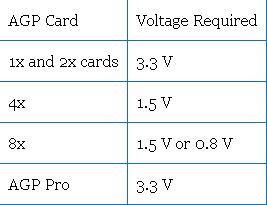

PCH 7-Expansion Cards, Audio, Video, and Storage <<
Previous Next >> Processors
AGP Slots
Since PCI was too slow for the newest 3D games that were becoming available in the late 1990s, a new standard port, dedicated to graphics, was needed. In 1996, the advanced graphics port (AGP) was announced and was embraced by 3D gamers for their high-speed video needs. It originally was introduced as a 1x variety, but as faster speeds were needed other varieties were added, including 2x, 4x, and 8x AGP. Each variety uses a different amount of power, as shown in the table below.
由於PCI對於1990年代後期推出的最新3D遊戲而言太慢了，因此需要專門用於圖形的新標準端口。 1996年，高級圖形端口（AGP）正式發布，並因其對高速視頻的需求而受到3D遊戲玩家的歡迎。它最初以1x品種引入，但由於需要更快的速度，因此添加了其他品種，包括2x，4x和8x AGP。每個品種使用不同的電量，如下表所示。

AGP card. Photo used under CC-BY-NC-ND license from Grant Hutchinson.
AGP was dominant for a long period of time, but the introduction of PCIe (PCI express) ultimately led to a large decline in popularity, because PCIe speeds were able to outperform AGP and provide a singular slot type for all devices.
Motherboards that provide AGP support have a single AGP slot. Several different versions of AGP have been implemented over the years:
- AGP 1.0 1x: Runs at 66 MHz with a data throughput rate of 266 MBps.
- AGP 1.0 2x: Runs at 66 MHz with a data throughput rate of 533 MBps.
- AGP 2.0 4x: Runs at 66 MHz with a data throughput rate of 1066 MBps.
- AGP 3.0 8x: Runs at 66 MHz with a data throughput rate of 2133 MBps.
AGP在很長一段時間內一直處於主導地位，但是PCIe（PCI Express）的引入最終導致了流行度的大幅下降，因為PCIe的速度能夠超過AGP並為所有設備提供單一的插槽類型。
提供AGP支持的主板有一個AGP插槽。這些年來，已經實現了AGP的幾種不同版本：
- AGP 1.0 1x：以66 MHz運行，數據吞吐率為266 MBps。
- AGP 1.0 2x：以66 MHz運行，數據吞吐率為533 MBps。
- AGP 2.0 4x：以66 MHz運行，數據吞吐率為1066 MBps。
- AGP 3.0 8x：以66 MHz運行，數據吞吐率為2133 MBps。
Motherboard with AGP slot identified inside the red rectangle. Photo used under CC-BY-SA license from Mario Sanchez Bueno.
PCI Express (PCIe) Expansion Slots
PCIe (PCI express) began replacing PCI, PCI-X, and AGP by 2005. Five slot sizes are available for PCIe: x1, x2, x4, x8, and x16. While x8 is an official standard, it is not very common and hard to find on both motherboards and cards. The two most common PCIe cards are the x1 and x16. PCIe x1 was designed to replace the old PCI cards for networking, modems, audio, input/output, and other needs by connecting to the southbridge. PCIe x16, on the other hand, focused on replacing AGP and PCI-X for high-speed graphics cards, and connects to the northbridge. Most motherboards support numerous types of PCIe, with several x1 and either one or two x16 card slots available. Notably, a smaller PCIe card can fit into larger PCIe slots, but not vice versa. For example, a PCIe x2 can fit into a PCIe x8, but a PCIe x8 cannot fit into a PCIe x2.
PCIe is considered the next generation I/O bus architecture. Rather than a shared bus, each PCIe slot links to a switch that prioritizes and routes data through a point-to-point dedicated connection and provides a serial full-duplex method of transmission. There are different versions of PCIe slots. The maximum number of lanes that can be assigned to the card inserted into the slot is based upon the card’s version. Basic PCIe provides one lane for transmission (x1), at a transfer rate of 250 MBps. It can also provide multiple transmission lanes (x2, x4, x8, x16, x32). Newer versions of PCIe can transfer data at an even higher rate per lane:
PCIe（PCI Express）到2005年開始取代PCI，PCI-X和AGP。PCIe有五個插槽大小可供選擇：x1，x2，x4，x8和x16。雖然x8是官方標準，但它不是很常見，很難在主板和卡上找到。兩種最常見的PCIe卡是x1和x16。 PCIe x1旨在通過連接到南橋來替代用於網絡，調製解調器，音頻，輸入/輸出和其他需求的舊PCI卡。另一方面，PCIe x16專注於替換高速圖形卡的AGP和PCI-X，並連接到北橋。大多數主板支持多種類型的PCIe，具有多個x1和一個或兩個x16卡插槽。值得注意的是，較小的PCIe卡可以放入較大的PCIe插槽中，反之亦然。例如，PCIe x2可以插入PCIe x8中，但PCIe x8不能插入PCIe x2中。 PCIe被認為是下一代I / O總線體系結構。每個PCIe插槽（而不是共享總線）鏈接到交換機，該交換機通過點對點專用連接對數據進行優先級排序和路由，並提供串行全雙工傳輸方法。 PCIe插槽有不同版本。可以為插入插槽中的卡分配的最大通道數取決於卡的版本。基本PCIe提供一個通道用於傳輸（x1），傳輸速率為250 MBps。它還可以提供多個傳輸通道（x2，x4，x8，x16，x32）。較新版本的PCIe可以在每個通道上以更高的速率傳輸數據：
- PCIe Version 1: 250 MBps
- PCIe Version 2: 500 MBps
- PCIe Version 3: 1 Gbps
- PCIe Version 4: 2 Gbps
-
PCIe cards are designated both by size and bandwidth capability. For example, a card may be identified as “single-lane (x1) PCIe with throughput up to 2 Gbps”, which would indicate this card is an x1 size card, and a version 4 card, based on its data transfer rate. Note that “Gbps” refers to “gigabits per second,” the measurement of the rate of data transfer. This should not be confused with a “GB” or “gigabyte,” which refers to the storage capacity of a device. The amount of data lanes in a connection represents the amount of bandwidth between the card and the host: more lanes equals more bandwidth. PCIe x32 cards offer maximum bandwidth, but they are rarely used because of their size.
PCIe版本1：250 MBps PCIe- 版本2：500 MBps
- PCIe版本3：1 Gbps PCIe
- 版本4：2 Gbps PCIe卡通過大小和帶寬功能指定。
- 例如，基於其數據傳輸速率，可以將卡標識為“吞吐量高達2 Gbps的單通道（x1）PCIe”，這將表明該卡是x1大小的卡和版本4的卡。請注意，“ Gbps”是指“千兆位每秒”，它是數據傳輸速率的度量。請勿將其與“ GB”或“ GB”混淆，後者是指設備的存儲容量。連接中的數據通道數量表示卡與主機之間的帶寬量：更多的通道等於更多的帶寬。 PCIe x32卡可提供最大帶寬，但是由於其尺寸而很少使用。

VIA EPIA-M910 mini-ITX board — PCIE-03 riser card. Photo used under CC-BY license from VIA Gallery.
PCH 7-Expansion Cards, Audio, Video, and Storage <<
Previous Next >> Processors